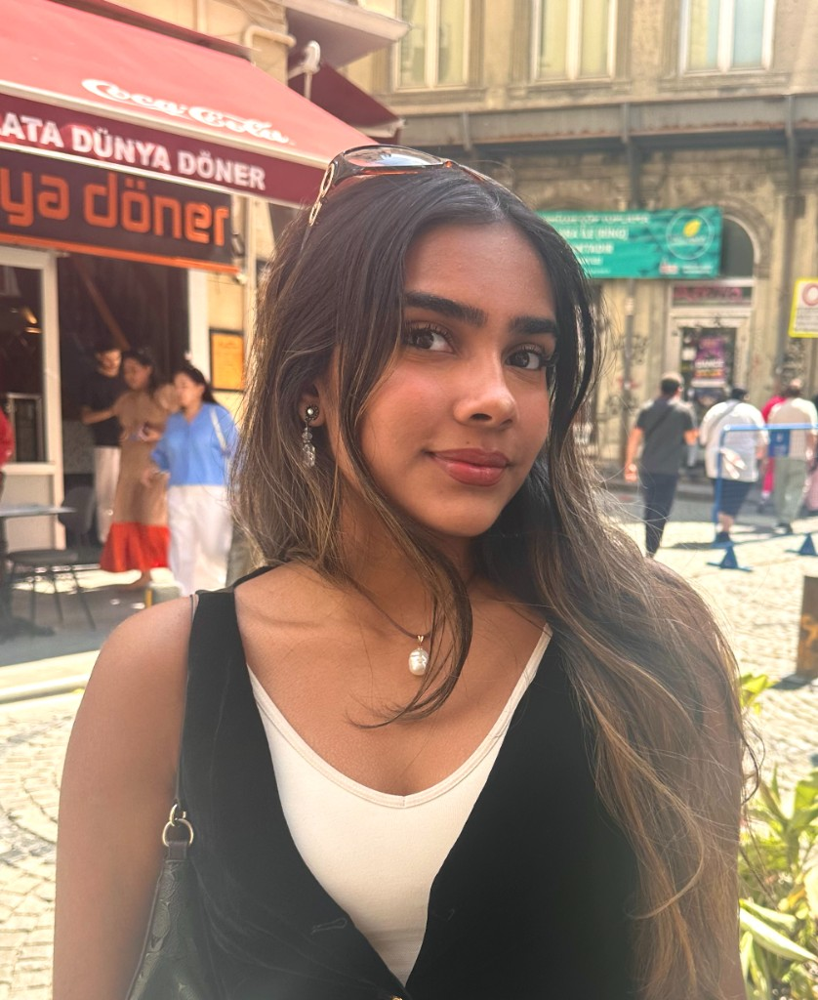

Esha Venkatanarayan
DEG // CS + BUSINESS MINOR
LOC // 42.45° N, 76.47° W · ITHACA
Amazon Software Development (Incoming)
Incoming role. I am joining Amazon on the security team as a software developer, building and hardening systems that protect customers, services, and infrastructure at scale.
I am excited to work on real-world security engineering problems: secure design, defensive tooling, and the kind of cross-team collaboration that keeps large systems trustworthy under pressure. More detail on projects and impact will land here after I start.
Security · Software development · IncomingSoundStudio
Music analytics platform — A full-stack web app that ingests audio, extracts musical features with Librosa, and surfaces them through responsive visualizations. I built the pipeline end-to-end: from file handling and feature engineering to an interface that makes complex audio data legible at a glance.
On the ML side, I use scikit-learn to cluster tracks by rhythmic, harmonic, and spectral fingerprints—so listeners can see patterns in their libraries and get production-minded recommendations. It is where my love for music and data finally share a waveform.
Python · Flask · Librosa · Pandas · NumPy · Scikit-learn · Plotly · HTML/CSS · JavaScriptStudySmart
Academic schedule optimizer — A productivity platform built for real Cornell schedules: adaptive priority queues, spaced repetition hooks, and ML that personalizes study plans so time is not just allocated—it is spent well.
I integrated the Google Calendar API for live scheduling, paired with predictive analytics to suggest when and what to study. Designed for 100+ students, it is my answer to the question: can software respect how humans actually learn?
Python · Django · pandas · scikit-learn · Google Calendar API · JavaScriptSaven Technologies
Software Engineering Intern — I developed features for a stock trading web application in Java, with a deliberate focus on UI/UX and iterative feedback from stakeholders. The goal was not only faster workflows, but clearer ones—reducing cognitive load when money and time are both on the line.
I collaborated across functions to design, test, and ship on schedule, learning how product sense and engineering discipline meet in a live financial product.
Java · Web · Cross-functional deliveryPoof Autonomous Pothole Robot
Creator & team lead — An autonomous system for pothole detection and automated asphalt dispensing: ultrasonic sensing, servo control, and mechanical design in SolidWorks, integrated on the VEX framework.
I owned mechanical-electrical bring-up across iterations—tightening durability, improving sensing reliability, and chasing the kind of field-ready performance that only comes from building, breaking, and rebuilding hardware in the loop.
Python · Arduino · SolidWorks · VEX · Sensors · ServosTransit & COVID-19 Research
Research — NYC public transportation — I modeled how the COVID-19 pandemic reshaped bus and train ridership, using linear regression in Python to relate demographic variables and neighborhood income to transit usage trends.
The work lived in charts, dashboards, and heatmaps—turning messy urban data into narratives about who could stay home, who had to ride, and how a city’s pulse changed overnight. Science, for me, is as much about communication as coefficients.
GeoPandas · Matplotlib · GitHub · Regression · VisualizationVEX Robotics & RoboCup Junior
Founder, captain & mechanical lead — I led the Robo Warriors, an all-girls robotics team, to 2nd place internationally at RoboCup Junior and 1st nationally at VEX—blending mechanical design, Python on the robot, and competitive strategy under pressure.
Off the field, I managed a $1,000 annual budget and resource allocation—because great robots are also great logistics problems. This is where I learned that leadership is part engineering, part storytelling, and part showing up when the match starts.
Python · Robot design · Strategy · Budget · Team leadership
I build software the way I write music: looping, listening, and adjusting until the signal cuts through the noise. Cornell CS trained my algorithms; robotics and competition trained my nerve; mentorship reminds me that code is never written in a vacuum.
I am drawn to the overlap of machine learning, thoughtful interfaces, and systems that help real people move through their day, whether that is a student opening StudySmart, a listener exploring SoundStudio, or a city rider traced in a transit dataset.
Teaching Assistant at Young Engineers Corp., workshops with Cornell Society of Women Engineers, and case work with the South Asian Business Association keep me grounded in communication: the best technical work is useless if nobody can feel it.
When I am not in the terminal, I am usually behind an instrument, producing, songwriting, piano, guitar, violin, ukulele, or in the kitchen improvising recipes the same way I refactor code. Soccer and travel keep me honest about distance, pace, and perspective.
Home: Edison, NJ